Network Analyzer
The Network Analyzer is used to analyze transfer functions (the ratio between an output function and an input function). The Bode plot shows the magnitude and phase of the expressed function versus frequency. See Bode plot for more information.
Typical usage of Network Analyzer: the WaveGen 1 output and Oscilloscope Channel 1 input of the device is connected to the filter input, while the Oscilloscope Channel 2 is connected to the filter output, as shown in the picture below.
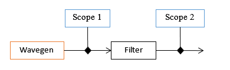
When the instrument is started, the Scope and WaveGen are stopped and their status shows Busy. The Network Analyzer takes control over these instruments while running.
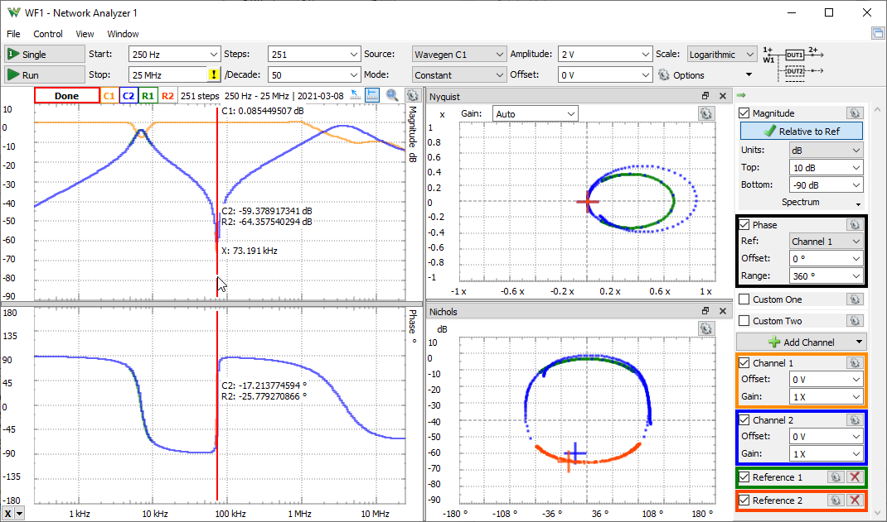
The analysis is performed from start to stop frequency in the specified number of steps. For each step, the WaveGen channel is set to a constant frequency and the Oscilloscope performs an acquisition. Using the frequency transformation result from the index corresponding to the current frequency step, the magnitude and phase value is calculated. The phase values are always relative to Channel 1. The magnitude is expressed in decibels with the 20 * Log10 (gain) formula, where 1x gain equals 0 dB and 2 X gain equals ~6 dB. The phase is plotted with the maximum and minimum value as the one specified for the Phase Offset +/- 180° value.
With Channel set to none under WaveGen options, no WaveGen channel is controlled. The Oscilloscope acquisitions are expecting a custom or external frequency sweep signal. The current frequency step is determined by peak frequency component with a magnitude of at least half of the specified WaveGen Amplitude value.
Having the "Relative to Channel 1" selected under Magnitude settings, only Channel 1 shows for Vpeak and Vrms the real value, for Gain and dB relative to the specified Amplitude. The magnitude shown for the other channels is relative to the measurement of Channel 1.
This is done to show the characteristics of the analyzed filter circuit, eliminating possible Wavegen signal attenuations at high frequencies or excitation signal current limitations.
This features is also useful to analyze sections of multistage filter, by connecting Scope Channel 1 to an intermediate section.
1. Menu
See Menu in Common Interfaces.
1.1. View
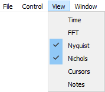
- Time: opens/closes the Time view.
- FFT: opens/closes the FFT view.
- Nyquist: opens/closes the Nyquist view.
- Nichols: opens/closes the Nichols view.
- Cursors: opens/closes the Cursors view.
- Notes: opens/closes Notes view.
2. Control
The control area lets you adjust the settings for the network analysis.
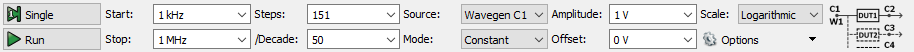
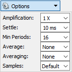
- Single button: starts a single analysis.
- Run/Stop button: starts repeated analysis or stops.
- Start lets you specify the start frequency.
- Stop: lets you specify the stop frequency.
- Steps: lets you specify the number of frequency steps used for the analysis.
- Step: lets you specify the step size in frequency for linear scale.
- /Decade: lets you specify the number of steps per decade for logarithmic scale.
- Scale: selects between linear or logarithmic frequency sweep.
- Source: selects the Wavegen channel to use. With the "external" option, an external or custom sweep generator can be used. In this case, the Network Analyzer detects the peak component between start and stop frequencies. With Differential the two Wavegen outputs of the device generate inverted (180°) signals.
- Mode: lets you select the amplitude mode: constant amplitude, variable based on table or custom script.
- Amplitude: lets you specify the amplitude of the generated signal, the peak to peak is twice of amplitude. For Differential option half of the amplitude is set for both signals, the peak to peak difference is twice of amplitude.
- Table: opens an editor where you can enter frequency/amplitude thresholds.

- Custom: opens an editor to enter custom script for amplitude based on frequency.
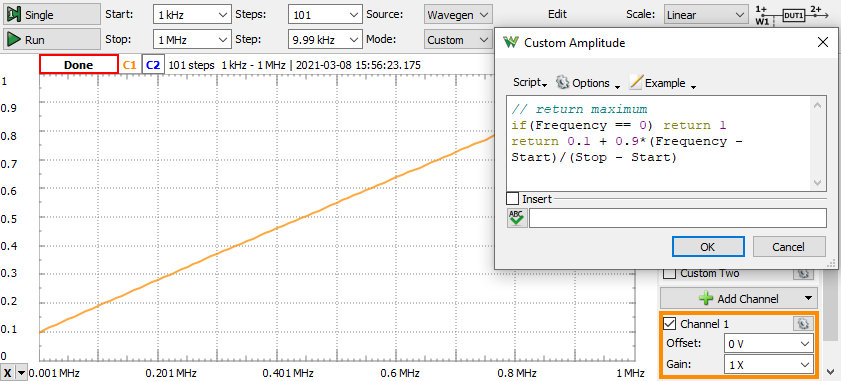
- Offset: lets you specify the offset for the generated signal.
The Options drop-down contains the following:
- Amplification: specifies the external amplification of the signal.
- Settle: specifies the settle time expressed in seconds. The acquisition is delayed this amount of time in each step after the frequency is changed. This option can be used to reduce the alteration effect of resonant circuits (for instance, a speaker).
- Min Periods: specifies the minimum number of generated sine periods to capture.
- Average: specifies the number captures to average in each step.
- Averaging: specifies the averaging time for each step. In each step it will perform and show the result of at least the average number of captures or more if it manages in the specified averaging time.
- Avg Mode: lets you select between mag/phase: average calculated in frequency domain on magnitude and phase, coherent: average of time domain captures, the Scope can trigger on any signal period and coherents: the Wavegen is periodically restarted on which the Scope triggers).
- Cohere and Overlap specifies the number of trials for magnitude square coherence measurement. With Overlap checked it performs 2Xnumber-1 trials. The result can be visualized in Custom One or Two plots with Coherence variable.
- Window and Beta: see Spectrum Traces options.
- Samples: specifies the number of samples in capture to take at each frequency step. The default is maximum at up to 32ki. Higher number improves the resolution and accuracy but it can slow down the measurement process.
- External Thr: specifies minimal valid magnitude for the Ref channel when External Source is used.
- The circuit diagram shows the suggested setup.
3. Channels
3.1. Magnitude
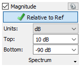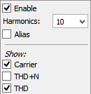
- Relative to Ref: when checked, the magnitude shown for the other channels is relative to the measurement of Ref channel selected in Phase group.
- Units: selects between dB, gain, %, Vpeak, Vrms representation of magnitude on Bode plot.
- Top: lets you specify the top of the magnitude plot.
- Bottom: lets you specify the bottom of the magnitude plot.
- Scale: under the gear drop-down, lets you select linear or logarithmic scale.
- Spectrum: lets you enable and configure the spectrum analysis.
- Harmonics: lets you select the number of harmonics to be considered for THD, like 10 sets up to 10th harmonic.
- Alias: lets you enable the calculation for aliased harmonics.
- Show: lets you select the traces to be displayed: THD+N, THD, HD2, HD3...
3.2. Phase
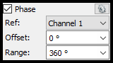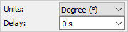
- Ref: lets you select the reference channel to be used for phase measurement and magnitude.
- Offset: lets you specify the offset of the phase plot.
- Range: lets you specify the range of the phase plot.
The gear tool contains the following:
- Units: selects between Degree and Radian units.
- Delay: lets you compensate the fixed delay of the DUT, like DSP latency.
3.3. Custom One/Two
The custom plots lets you specify custom functions.
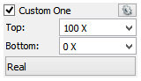
- Top: lets you specify the top of the custom plot.
- Bottom: lets you specify the bottom of the custom plot.
- Function: opens the function editor.
The gear tool contains the following:
- Scale: lets you select linear or logarithmic scale.
- Units: specifies the units for the plot.
- Name: specifies the plot name.
The custom functions is evaluated for each frequency step. It receives as input:
- Freq: step frequency in Hertz
- Gain: magnitude in gain relative to Amplitude or Channel 1
- Phase: relative to Channel 1 in radian
- Real: real part, gain x cos(phase)
- Imag: imaginary part, gain x sin(phase)
- THDN: total harmonic distortion in gain relative to carrier
- THD: total harmonic distortion in gain relative to carrier
- HD#: HD2, HD3,.... harmonic distortion in gain relative to carrier
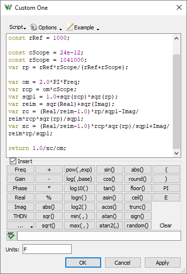
The provided examples (capacitor and inductor with series/parallel approximations) expect a reference resistor. The value of this is defined in the rRef constant. The rScope is the scope input resistance and cScope the capacitance.
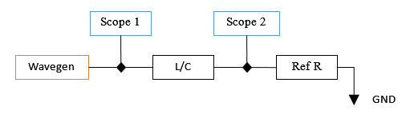
10 nF capacitor with 2kΩ reference resistor:
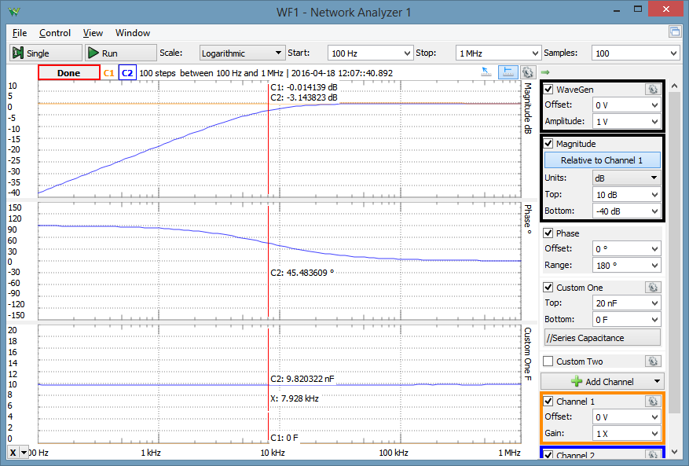
15 uH inductor with 5Ω reference resistor:
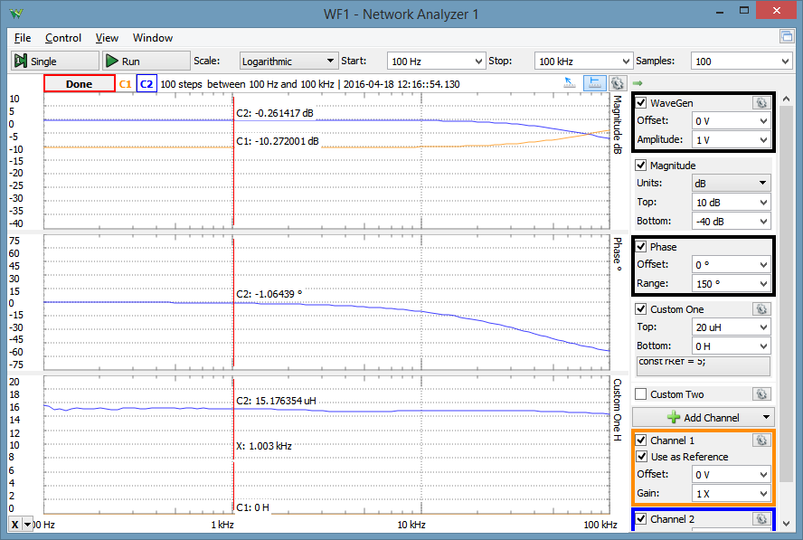
3.4. Add Channel
Saves a channel as reference to compare with further analysis.
3.5. Channel
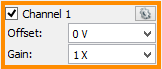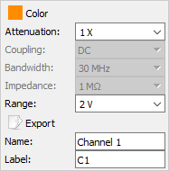
- Offset: lets you specify the offset of the Scope channel.
- Gain: lets you specify the gain of the Scope channel relative to the WaveGen amplitude.
The gear tool contains the following:
- Color: sets the channel waveform color.
- Attenuation: specifies the used probe attenuation.
- Range: lets you specify the range of the Scope channel.
- Export: opens export window with the respective channel data, see Export in Common Interfaces.
- Name: specifies the channel name.
- Label: specifies the channel label.
3.6. Reference
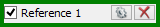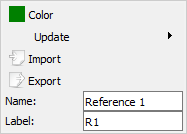
The Reference options contains the following:
- Color: sets the channel waveform color.
- Update: updates reference channel with the selected channel waveform.
- Import: opens import window for the respective channel.
- Export: opens export window with the respective channel data, see Export in Common Interfaces.
- Name: specifies the channel name.
- Label: specifies the channel label.
4. Bode Plot
The Bode plot shows the magnitude and phase.
By default, the Channel 1 magnitude is relative to the WaveGen amplitude. The magnitude and phase values of the other channels are relative to channel 1.
The gear tool (in the top-right corner or mouse right-click) contains options for:
- Color: selects the color theme for this plot.
- Plot Width: sets the thickness of the waveform, expressed as points.
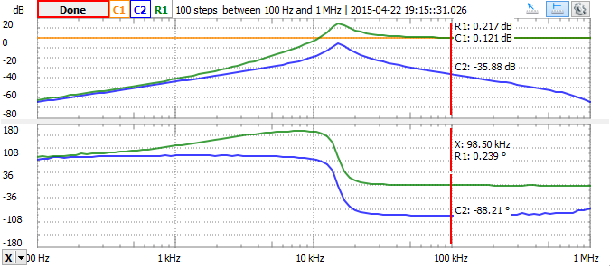
4.1 Quick Measure
See Quick Measure in Common Interfaces.
The corresponding position is marked with a cross on Nichols and Nyquist plots.
4.2. Cursors
See Cursors in Common interfaces.
5. Views
5.1. Time
The time plot shows the oscilloscope acquisition of the last frequency step. This view is used to help adjust the offset and gain of the oscilloscope input channels.
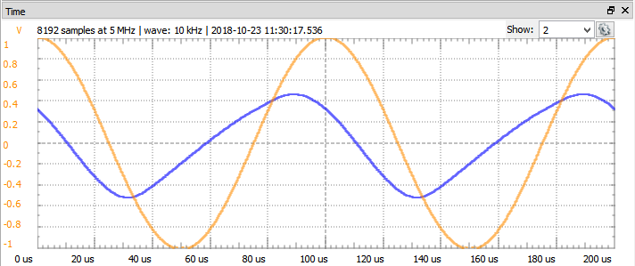
5.2. FFT
The FFT plot shows the spectrum of the last frequency step.
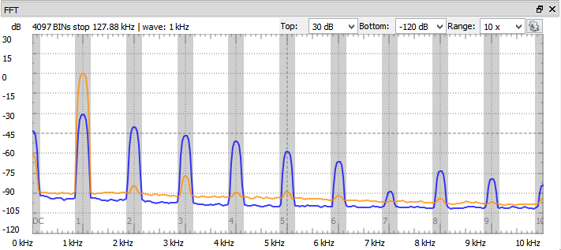
5.3. Nyquist
The Nyquist plot is the magnitude and phase plotted in the polar coordinate system.
The selected cursor or Quick Measure position is marked with cross on the plot.
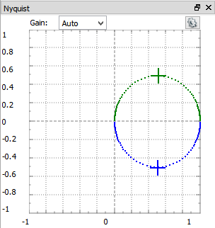
5.4. Nichols
The Nichol's plot is the magnitude and phase plotted in the Cartesian coordinate system.
The selected cursor or Quick Measure position is marked with cross on the plot.
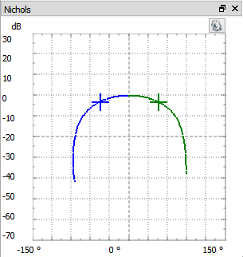
5.5. Cursors
The Cursors show cursor information in table view. See Cursors for more information.
This table shows additional information to cursor tooltips: the 1 / delta x frequency, delta y vertical difference, and delta y / delta x.
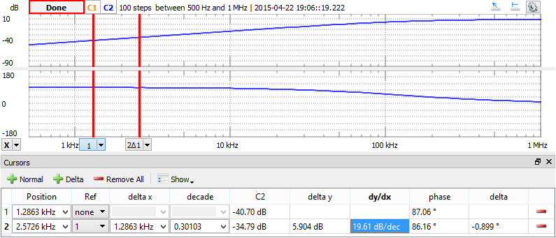
6. Export
See Export in Common Interfaces.